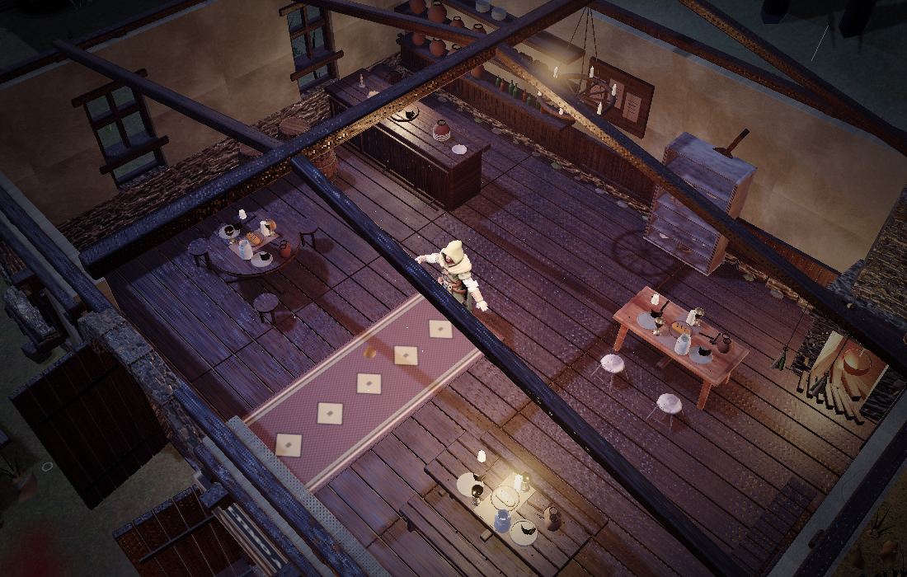
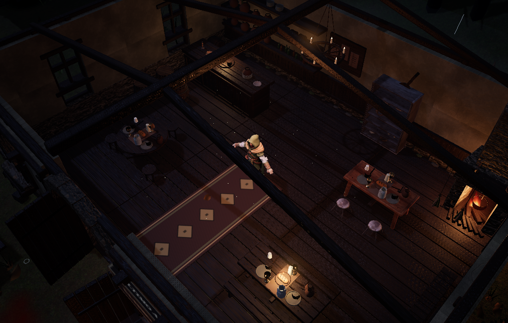

Voltar ao site do Menestrel
Versão 1.5.1 — combate, iluminação e materiais
Golpes e quedas mais coerentes, guarda dos elites com espaço para flanquear e efeitos elementais distintos. A apresentação ganhou sombras corrigidas, reflexos mais contidos e materiais com respostas diferentes.
Ver os downloads e as orientações para Android
Compare a versão anterior com esta rodada. Mova o controle para revelar a imagem nova.


DepoisAntes